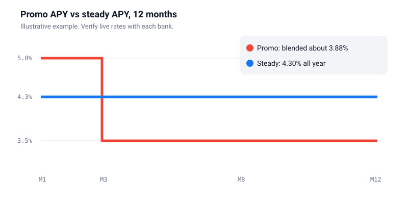
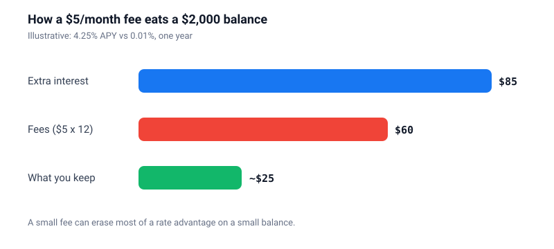

Best High-Yield Savings Accounts: the 6-point checklist that beats any top 10
Here is the uncomfortable truth about every “best savings account” list: it is out of date almost the moment it is published.
Rates move. Promotions expire. Sponsors change. So instead of handing you a ranking that will be wrong by next month, we are going to give you something more durable: the method.
These are the six checks a careful analyst runs before moving a single dollar. Learn them once and you can judge any account, at any bank, in any rate environment.
Why your savings account might be quietly underperforming
Plenty of traditional savings accounts still pay close to nothing. At 0.01% APY, $10,000 earns about one dollar a year. That is not a typo.
Meanwhile, competitive online savings accounts have paid many times more in recent years. The exact number changes, which is why we will not print one here. But the gap is often hundreds of dollars a year on a typical emergency fund.
That gap is money you are giving away simply by not moving.
What the APY banner does not tell you
APY stands for annual percentage yield. It includes compounding, so it is the right number to compare. But it is also variable, and the headline version is often not the one you will earn all year.
Promotional windows
A big rate that lasts 60 or 90 days, then drops to a lower standard rate. The drop is usually in the footnotes.
Balance tiers
The advertised rate may only apply up to a cap, say the first $10,000. Anything above earns less.
Behaviour-linked rates
Some accounts require direct deposit, a minimum number of debit purchases or a linked checking account. Miss one month and your rate slips.
The 6 checks that actually matter
Score every candidate from 1 to 5 on each check. Fees and insurance count double. Pick the highest total, not the highest single rate.
| Check | What to verify | Red flag | Weight |
|---|---|---|---|
| APY + history | Current rate, standard rate after any promo, balance tiers | No rate history | |
| Fees | Maintenance, inactivity, transfer and wire fees | Fee needs a minimum | |
| FDIC insurance | Bank listed on FDIC BankFind, or named partner bank | Unnamed partner | |
| Access | ACH speed, daily limits, mobile deposit | Multi-day holds | |
| Rate behaviour | How fast the bank cut rates last time | Cuts first, raises last | |
| Support | Real humans, reasonable hours, app ratings | Chat bot only |
The promo-rate trap, with real math
Imagine two banks.
Bank A advertises 5.00%. The footnote says that rate lasts three months, then drops to 3.50%.
Bank B pays a flat 4.30%. No promotion, no conditions.
Which one pays more over a year? Bank B. Comfortably.

Here is the calculation you can reuse for any offer:
If finding the standard rate takes more than two minutes of digging, treat that as information too.
Fees: the silent APY killer
Fees work like interest in reverse. And on smaller balances, they win.
Take a $2,000 balance. Moving from 0.01% to 4.25% earns you roughly $85 extra a year. Add a $5 monthly maintenance fee and $60 of that disappears.

Fees to check before you open
- Monthly maintenance fees, and the conditions to waive them
- Inactivity or low-balance fees
- Excess withdrawal or transfer fees
- Outgoing wire and expedited transfer fees
Rule of thumb: for an emergency fund, the target fee is zero.
FDIC insurance, decoded
FDIC insurance protects deposits at insured banks up to $250,000 per depositor, per insured bank, for each account ownership category. If the bank fails, insured money is protected.
Two quick checks confirm you are covered:
- The institution is an insured bank. Search it on the FDIC BankFind tool.
- Your account is held at that bank. Not just marketed by an app that partners with it.
The fintech app question
Many money apps are not banks. They place your deposits at partner banks. That can be perfectly fine, as long as the app clearly names the bank so you can verify it.

Access: can you actually reach your money?
An emergency fund is only useful if you can get to it quickly. Speed varies more than most people expect.
| Method | Typical speed | Cost | Verdict |
|---|---|---|---|
| Standard ACH transfer | 1 to 3 business days | Usually free | Fine for planning |
| Instant transfer | Minutes | Sometimes a fee | Check limits |
| Wire transfer | Same day | Often a fee | For big, urgent moves |
| Cash deposit | Often not possible | Varies | Online banks struggle |
Keep a small buffer in checking. That way a three-day transfer never forces you onto a credit card.
HYSA vs CD vs checking vs investing
Each tool has one job. Problems start when money sits in the wrong one.
| Where | Rate | Access | Best for |
|---|---|---|---|
| High-yield savings | Variable | High | Emergency fund, short-term goals |
| Certificate of deposit | Fixed for the term | Locked | Money needed on a known date |
| Checking | Near zero | Instant | Bills buffer only |
| Diversified investing | Variable, can lose value | Market days | Goals five or more years away |
Not sure how big your emergency fund should be? Try our emergency fund runway calculator.
The 30-minute method
- Minutes 0 to 10: shortlist five. Two online banks, one big bank's online arm, one credit union and one app, so you can compare models.
- Minutes 10 to 20: copy the facts. From each bank's own site: current APY, standard APY, fee schedule and transfer rules.
- Minutes 20 to 28: score them. Use the six checks. Double the weight on fees and insurance.
- Minutes 28 to 30: act. Open the winner, move a small test amount first, then automate a monthly transfer.
Five mistakes that cost real money
- Chasing the top rate at an app that will not name its bank
- Ignoring fees that cancel out the interest
- Treating a promo rate as permanent
- Moving everything before testing a small transfer
- Never checking the rate again after opening
Frequently asked questions
Is a high APY guaranteed?
No. Savings rates are variable and can change at any time. Only a CD locks a rate, and only for its term.
Are online banks safe?
If they are FDIC-insured banks, deposits are protected up to the insurance limits. Verify on FDIC BankFind.
How much should I keep in a high-yield savings account?
A common guideline is three to six months of essential expenses. Our runway calculator gives you a personal number.
Is interest taxable?
Yes. Savings interest is generally taxable income in the US. Banks report it on a 1099-INT when it passes the reporting threshold.
Why do you not list specific banks and rates?
Because rates change constantly and a stale list misleads. A good method stays accurate.
Sources
FDIC: deposit insurance rules and BankFind. IRS: interest income reporting. Each bank's own rate and fee disclosures. General information for US readers, not financial advice.